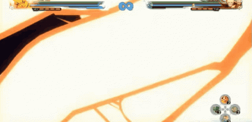

Naruto Shippuden: Ultimate Ninja Storm 4

Naruto Shippuden: Ultimate Ninja Storm 4 é o encerramento épico da série Storm, cobrindo o clímax da Quarta Grande Guerra Ninja até o duelo final entre Naruto e Sasuke. O jogo é mundialmente reconhecido por seus gráficos cinematográficos que superam o anime em fidelidade visual e intensidade. A principal inovação na gameplay é o sistema de Troca de Líder, que permite alternar entre os três personagens da sua equipe no meio de combos para criar estratégias dinâmicas. Além disso, o jogo introduziu danos em tempo real nas roupas e efeitos elementais que interagem com o cenário. Com um elenco massivo de mais de 100 lutadores, incluindo versões de The Last e a expansão de Boruto, Storm 4 consolidou-se como a experiência definitiva para os fãs, unindo uma narrativa emocionante com o combate ninja mais espetacular já produzido.
| Gênero | Luta em arena 3D |
|---|---|
| Desenvolvedora | CyberConnect2 |
| Data de lançamento | 16 de fevereiro de 2016 |